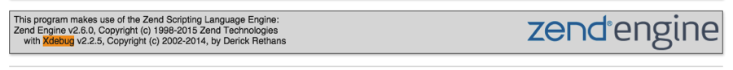
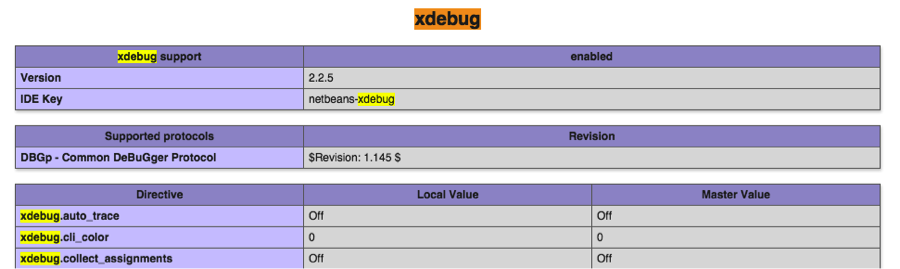

Open any project. Click on the menu item Debug -> Debug Project (or use ctrl-F5 on Windows or CMD-5 on a Mac).
Look at the bottom of the NetBeans window. If you see “netbeans-xdebug running” then you’re ready to go. You should see a “NetBeans Connector” is debugging this tab in your browser and then in the code editor within Netbeanns the first line of code should be highlighted.
If you do not get the above you may have to configure NetBeans or replace XAMPP with MAMP or vice versa.
Locate your XAMPP php.ini file and open it in a text editor such as TextEdit. You may need to run this as administrator or change its file permissions. It’s probably in /Applications/XAMPP/etc but you can check the output of phpinfo() to be sure
Find the line output_buffering=4096 and change it to output_buffering=Off.
Put the following after the line you added to load the zend_extension dll (from above)
[xdebug]
xdebug.default_enable=1
xdebug.remote_enable=on
xdebug.remote_handler=dbgp
xdebug.remote_host=localhost
xdebug.remote_port=9000
xdebug.remote_autostart=1
xdebug.idekey="netbeans-xdebug"
xdebug.remote_mode=reqRestart Apache and look at the output of phpinfo(). Search for xdebug in the webpage and you should find the following:  and 
Try the debugger in NetBeans
Locate your XAMPP php.ini file and open it in a text editor such as Notepad. It’s probably in C:\XAMPP\php but you can check the output of phpinfo() to be sure. You can also use the XAMPP control panel and click on the Config button then select php.ini
Add the following after the zend_extension line you added (e.g. zend_extension = C:\xampp\php\ext\php_xdebug-2.5.4-7.1-vc14.dll)
[XDebug]
zend_extension = "C:\xampp\php\ext\php_xdebug.dll"
xdebug.profiler_append = 0
xdebug.profiler_enable = 1
xdebug.profiler_enable_trigger = 0
xdebug.profiler_output_dir = "C:\xampp\tmp"
xdebug.profiler_output_name = "cachegrind.out.%t-%s"
xdebug.remote_enable = 1
xdebug.remote_handler = "dbgp"
xdebug.remote_host = "127.0.0.1"
xdebug.trace_output_dir = "C:\xampp\tmp"
xdebug.remote_port=9000
xdebug.idekey="netbeans-xdebug"Restart Apache and look at the output of phpinfo(). Search for xdebug in the webpage and you should find the following: and
Try the debugger in NetBeans
If you do not get the above to work you may have to configure NetBeans or replace XAMPP with MAMP or vice versa.